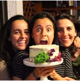

Este programa está diseñado para reinventarte para volver a nacer y comenzar de cero. Esto NO es una ``DIETA ´´ es un programa para crear hábitos saludables que además te ayudara a sentirte y verte mucho mejor.
NO creo en las ´´dietas´´. No creo en una alimentación restrictiva que elimina algún grupo de alimentos, que te pide pesar y medir todo obsesivamente, no creo en las dietas que te matan de hambre con polvos o pastillas, no creo que hacer una ´´dieta´´ sea sinónimo de hábitos saludables.
Yo creo en el balance en comer de todo un poco, seguir disfrutando de la vitamina P (placer) creando la versión saludable de cualquier platillo, comer en su mayoría alimentos vivos y no muertos. Vivir en armonía con tu alimentación es parte fundamental para tener todo en orden en tu vida así mismo disfrutar lo que comes es igual de importante.
Yo promuevo un estilo de vida saludable sin llegar a los excesos, la ´´dieta´´ ideal es aquella que puedas mantener viviendo la vida más sana que puedas disfrutar. Comienza a cambiar hábitos poco a poco cualquier cambio cuenta.
Ver Video explicativo" Estoy súper contenta con su trabajo! Me encantan los tips y la manera en que explica la importancia de comer bien!! "
" Simplemente la mejor nutriologa de San Luis! Esta súper al pendiente de mi y siempre feliz de responder mis preguntas! Muy recomendable! "
" Excelente! Te explica todo super bien, te ayuda a crear hábitos 100% positivos y te motiva mucho a llegar a tu meta. La recomiendo. "
" La mejor nutriologa! Me encantan las dietas y como te enseña a llevar una vida más saludable "
" La recomiendo muchísimo! Un trato excelente con sus pacientes. No solamente te ayuda a bajar de peso, también te hace llevar una vida súper saludable y mantenerte en forma. "
" Muy Buen servicio, contestó todas mis dudas , más que dieta Te cambia el estilo de vida "
" Cada día estoy más contenta por los resultados obtenidos..recomendada altamente! Le da muy buen seguimiento a las consultas. "
" Feliz con los resultados :) al principio difícil pero ahora me siento con 8 años menos, 100% recomendable. "
" Me encantan todos sus consejos y los tips,quisiera q m dijera como puedo hacer para q mi metabolismo,me ejercito 4 veces x semana y trato de consumir 2080 calorias q segun debo de consumir "
" Recomendado al cien! un trato personalizado y profesional en todo momento! "
" Mi primer día de dieta, aún en viernes se puede empezar, con la actitud al 100. "
" 100% recomendado!!! A diferencia a muchas personas especializadas en nutrición. La Nutriologa Paola Torre es una persona que quiere innovar este estilo de vida y a ayudar a las personas a envolverse más. Como nuevos tips, diferentes recetas, ayudarte a motivar con el ejercicio y que quieras seguir cambiando tus hábitos y no rendirte!' Que al final el único propósito es ayudarte a tener una mejor salud física, mental y corporal. "
" Super buena nutriologa!!!! Muy profesional, da muy buenas recetas variadas, ricas y que te ayudan a comer muy sano y a estar en el peso ideal. Muy recomendable para toda la familia, desde niños hasta los abuelos!!! "
No, este plan está basado en alimentos accesibles, ninguna superfood incluida en el programa es obligatoria.
Claro, este programa contiene muchas diferentes opciones en cada tiempo de comida desde opciones muy sencillas hasta opciones muy creativas.
No, También es para personas que buscan hacer una transición en su vida, comer de manera sana, cambiar hábitos, mantenerse o hasta subir masa muscular ya que el programa es personalizado.
El ejercicio te ayudara a llegar mucho más rápido a tu meta además que por salud es bueno realizarlo, pero si por alguna razón no puedes hacerlo seguirás teniendo muy buenos resultados con este programa.
Si, el programa se personaliza antes de ser enviado a cada paciente.
En OXXO puedes hacer depósitos a cuentas y pagos a tarjetas de crédito de 8am a 8pm todos los días del año, no importa si es domingo o día festivo.
Lleva la siguiente imagen, apunta el numero de cuenta y clabe.
Con estos datos puedes hacer hacer tu pago en efectivo en cualquier tienda OXXO.